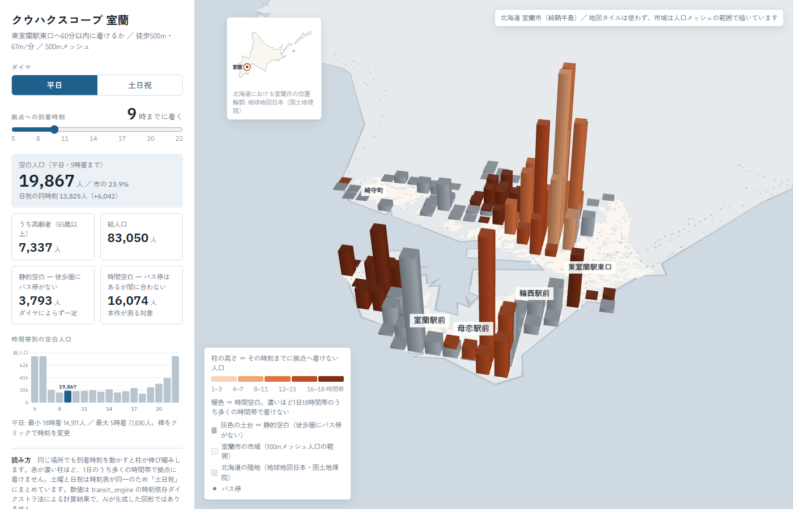

公共交通オープンデータチャレンジ2026 応募作品 ／ 北海道室蘭市・道南バス
バス停からの距離ではなく、時刻表で交通空白を測ります。 同じ地点でも時間帯・曜日で到達できるかが変わり、距離基準ではそれが見えません。 室蘭市では休日7時に市の 46.1%（38,322人）が拠点へ着けません。

到着時刻とダイヤ（平日／土日祝）を切り替えると、拠点に着けない人口の柱が伸縮します。 灰色の土台が静的空白（徒歩圏にバス停がない）、暖色の柱が時間空白です。
時刻依存ダイクストラ法の実装、空白人口の定義、処方モジュール、 発見した計算バグ、既知の限界までをまとめたもの。
修正した計算バグと、それによって更新された分析結果の対照表。
Python / Streamlit。自作の時刻依存ダイクストラ法、テスト975件。